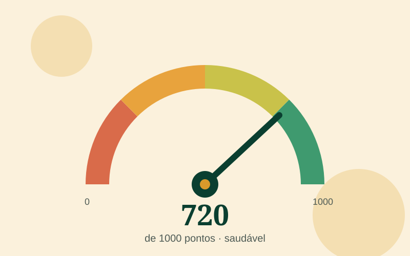

Por que medir com uma nota?
"Estou bem ou mal de dinheiro?" é uma pergunta difícil de responder olhando só o saldo da conta. Um saldo alto no dia do salário pode esconder uma fatura atrasada; um saldo baixo pode ser só o reflexo de um aporte que acabou de ir para a reserva. A nota junta, num número só, os sinais que realmente importam.
O FinanceR calcula a nota a partir do próprio fluxo de dinheiro da pessoa: o que entra, o que sai, o que está atrasado e quanto do limite do cartão está em uso. Nada é declarado à mão quando dá para ler do banco.
Os cinco pilares
| Pilar | Peso | O que mede |
|---|---|---|
| Pagamento em dia | 350 | Contas vencidas e há quanto tempo estão em atraso. |
| Comprometimento da renda | 250 | Quanto da renda vai para parcelas, empréstimos e cheque especial. |
| Sobra do mês | 150 | Se, na média dos últimos meses, entra mais do que sai. |
| Reserva de emergência | 150 | Quantos meses de custo de vida estão guardados com resgate imediato. |
| Uso do cartão | 100 | Quanto do limite total do cartão está consumido. |
O pagamento em dia pesa mais porque é o que custa mais caro quando falha: atraso gera juro, multa e, depois de algumas semanas, pode levar o nome para os cadastros de inadimplentes.
As faixas da nota
- Crítico (0–300): há dívida atrasada ou gasto muito acima da renda. A prioridade é estancar.
- Baixo (301–500): as contas até fecham, mas sem folga. Um imprevisto vira dívida.
- Regular (501–700): a base existe; falta reserva ou o cartão está alto.
- Bom (701–850): contas em dia, sobra mensal e reserva em construção.
- Excelente (851–1000): reserva formada, cartão sob controle e sobra indo para metas.
Como subir a nota
- Pague primeiro o que está atrasado, começando pela dívida mais antiga e pela mais cara (cartão e cheque especial).
- Pague a fatura inteira sempre que possível: o rotativo do cartão está entre os créditos mais caros do país.
- Mantenha o uso do limite abaixo de 30%. Perto do teto, qualquer imprevisto vira rotativo.
- Crie uma sobra mensal, mesmo pequena, e mande essa sobra para a reserva de emergência.
- Evite novas parcelas até o comprometimento da renda voltar para menos de 30%.
Na prática, quem sai do "Baixo" para o "Bom" quase sempre passa pelos mesmos dois passos: zerar os atrasos e começar a reserva. O resto vem com o tempo.